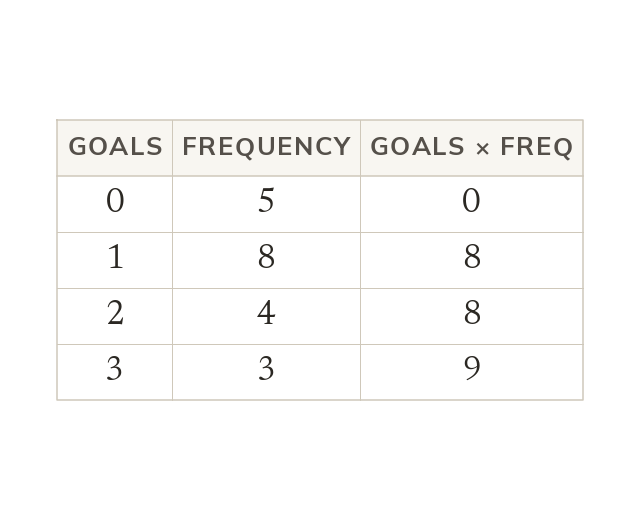

A table is a list in short
Each value occurs as many times as its frequency says. So 1 goal with frequency 8 means eight matches with 1 goal. Their total is value × frequency: 8 goals.
Each value occurs as many times as its frequency says, so 1 goal with frequency 8 means eight matches with 1 goal. Their total is value × frequency, 8 goals.